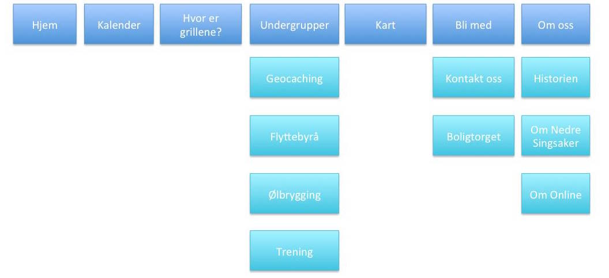

Administrative Details
Klient: Fikti V. Person, Markedsdirektør i Nedre OnlineslettePurpose, goals, and audience
Mål
Målet for nettsiden er å gi informasjon til beboerne på Nedre Onlineslette. Her skal de kunne finne informasjon om forkjellige ting de har interesse av. For eksempel avstand til vaskeriet eller hvor grillene er for øyeblikket.Nettsiden vil gjøre det mulig for brukerne å finne informasjonen de søker. De kan også be om informasjon om de ønsker det.Brukere
Målgruppen for nettsiden er beboere på Nedre Onlineslette, og eventuelle andre som ønsker å flytte dit. Behovet brukerne har for informasjon er å vite når vaskemaskinene er ledige på vaskeriet, når butikken stenger, hvor langt det er til nærmeste treningssenter eller hvem som arrangerer neste vors.
Navigation Structure
I oppbygningen av vå nettside bruker vi Hypertext for å enklest mulig ha en oversiktlig og enkel struktur. Målet er å lage en enkel og brukervennlig nettside som innfører kundens krav.Hver enkelt side vil ha linker til de andre kategoriene for at man enkelt kan navigere seg rundt på nettsiden. Denne navigasjonsmenyen finner man under hovedoverskriften. Kategoriene i menyen består av en Hovedside; Kalender; Hvor er grillene?; Undergrupper; Kart; Bli med; og Om oss. Tre av undersidene ha linker til andre sider som mer detaljert beskrivelser av formålet bak nettsiden og hvordan den best skal brukes.
De tre sidene som linker videre til nye sider er: Undergrupper, Bli med, og Om oss. Hver av disse kategoriene inneholder flere typer forskjellig informasjon, dermed er det enkleste å dele denne informasjon opp i underkategorier slik at man får en mer oversiktlig side.
Undergrupper:
Denne siden vil linke til diverse aktiviteter som bedrives ved Nedre Onlineslette. Dette inkluderer: Geocaching, Flyttebyrå, Ølbrygging, og Trening.
Bli med:
Denne siden linker til en kontaktside og videre link til boligsidene til Studentsamskipnaden i Trondheim, Boligtorget.
Om oss:
Denne side linker til Historie, Om Nedre Singsaker, og Om Online.
Page Layout and Appearance
description of design decisions that are universal to your site:Fonts (types and sizes)
Paragrafer: 14
H1: 24
H2: 20
H3: 16
Color scheme (text, background, links, shadows, borders)
Navbar position in the page and its appearance
Banner
Footer
Social icons bar
Background images
Tekst-type skal være Open Sans, Georiga eller Sans-serif, hvor de to sistnevnte er reserve-fonter om nettleseren ikke gjenkjenner primærfonten. Tekststørrelse er som følger:
Lenker skal være svart både før og etter at linken er besøkt. Når man legger musepekeren over skal den ha en understrek.
Tekst skal ha en klassisk svart farge.
Bakgrunnen til siden er #CCE1F2 for sidebakgrunn og hvit bagrunn for tekst og innhold på siden.
Vi velger ikke å ha kanter på nettsiden, ettersom at det ikke vil passe med fargene og layout på siden, vi velger heller ikke å ha noen skygger på webområdet.
Navbar skal ligge horisontalt på toppen av siden. Den skal være i en "Fixed" posisjon.
Navbaren skal være gjennomsiktig svart. Når man beveger musepekeren over vil fargen endres til solid svart.
Banneret til webområdet består av navnet til klient: Nedre Onlineslette i svarte bokstaver.
Footeren består av en egenprodusert logo, samt firmanavn.
Det vil være et ikon med link til Facebook-siden til Nedre Onlineslette under "kontakt oss"-siden.
Ettersom at vi har ensfarget bakgrunnsinformasjon, skal det ikke være bakgrunnsbilder på nettsiden.
I alt skal det være et minimalistisk utseende. Det skal ikke være noe distraherende på webområdet annet enn det klienten har bestilt.
Content
Hjem
Dette er forsiden. Her skal det stå om nettstedet og Nedre Onlineslette generelt. Det skal også ligge en dagens Giphy på forsiden. Dagens giphy skal genereres random fra giphy.com.
Kalender
En Google-kalender hvor arrangementer i regi av Nedre Onlineslette vises. Dette kan være handleturer, vors, trening, hybel til hybel osv. Kalenderen vil ha målene 750 x 600 px slik at den fyller siden godt.
Hvor er grillene?
Informasjon om hvem av medlemene som oppbevarer grillene, samt regler for bruk av grillene. Har skal det være mulig å velge en av de to grillene, og se hvem som har de. Det skal være bilder/illustrasjon av grillene på ca. 350 x 350 px.
Undergrupper
Denne siden skal peke til flere sider om de forskjellige undergruppene. Disse er Geocaching, trening, flyttebyrå og ølbrygging. Her kan det legges til flere etterhvert. Undersidene skal inneholde informasjon om hvem som er med i de ulike gruppene, for eksempel ved å linke til alle geocaching-profilene.
Kart
Denne siden skal gi informasjon om hvem som bor hvor, hvor Bunnpris, treningssenterert og vaskeriet ligger. Kartet vil ha størrelsen (ca.) 750 x 750 px.
Bli med
På denne siden skal det beskrives hvordan man kan bi medlem av Nedre Onlineslette. Denne siden skal også peke videre til kontaktinformasjon og SiTs Boligtorg. Boligtorget er en ekstern side. Kontaktinformasjon er enn så lenge e-post, men blir kanskje et form dersom kunden ønsker det.
Om oss
Denne siden skal gi informasjon om hvem som står bak nettsiden. Her skal man kunne klikke seg videre til historien bak Nedre Onlineslette, lese om Nedre Singsaker og om Online generelt.
Minimum Requirements
JavaScript-Applications:
Dropdown-meny:
Giphy-API:
Endring av bildestørrelse:
Form-validation:
Dropdown-meny i hovedmenyen på siden. Det er ikke alle sidene som har undersider (enn så lenge), men der det er undersider vil det være dropdown. For eksempel på "Undergrupper".
Henter ut en tilfeldig GIF fra Giphy sine nettsider. Denne skal oppdateres automatisk hver dag.
Bildet vil forstørres når man legger musepekeren over
Kontakt oss dersom kunden ønsker det. Kan også bli i en annen variant.
Plan
- Beskrivelse av planleggningen av nettsiden. Vi skal bygge nettsiden ved å bruke hovedsakelig HTML, mens vi bruker en felles .css-fil til alle sidene våre slik at det blir en sammenhengende grafisk profil. Til noen av de mer avanserte funksjonene, som dropdown-menyen, kommer vi til å lage i JavaScript. Vi har planlagt å jobbe på arbeidskvelder, der vi i tillegg skal drikke pils under for å øke motivasjonen til gruppa.
- Dette er en oversikt over de forskjellige oppgavene som skal utføres. Innkludert er deadline og ansvarspersonene. Hovedside Deadline: 12.10.15 Ansvarlig: Christoffer Lofsberg Kalender Deadline: 12.10.15 Ansvarlig: Signe Elise Livgard Hvor er grillene? Deadline: 01.11.15 Ansvarlig: Vilde Mariussen Undergrupper Deadline: 01.11.15 Ansvarlig: Kristoffer Hajem Kart Deadline: 01.11.15 Ansvarlig: Christoffer Lofsberg Bli med Deadline: 01.11.15 Ansvarlig: Signe Elise Livgard Om oss Deadline: 01.11.15 Ansvarlig: Andreas Aursand Giphy Deadline: 01.11.15 Ansvarlig: Christoffer Lofsberg
- Dette er listen over filer og bilder som vi planlegger å bruke på nettsiden. index.html kalender.html grillene.html undergrupper.html geocaching.html flyttebyrå.html olbrygging.html trening.html kart.html bli_med.html buttons/ kontakt_oss.html Boligtorget om_oss.html historien.html singsaker.html om_online.html images/ footer.jpg header.jpg style.css
- - Dette trenger vi av materiale fra vår klient Fikti V. Person. Dette er satt opp i en liste for å gi en enkel og forståelig oversikt. Det vi trenger er informasjonstekster og bilder. Headerbilde Footerbilder Kontaktinfo Tilgang til kalender Generell informasjon om hver kategori og underkategori: Undergrupper Geocaching Flyttebyrå Ølbrygging Trening Bli med Kontakt oss Boligtorget Om oss Historien Om Nedre Singsaker Om Online